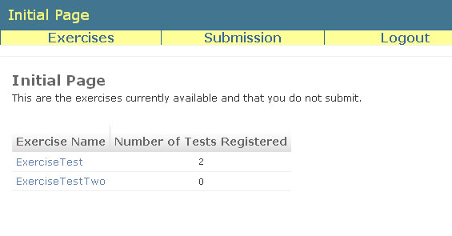
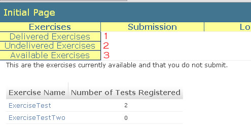
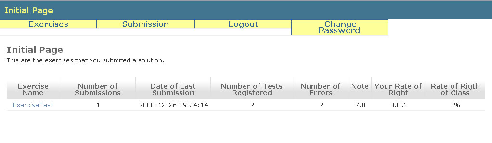

Students' Initial Page
When logged in, the student will be redirect to initial page. In this page he/she will see the available exercises that he/she not submited a solution.
Clicking at the link in the name of exercise, the student will see details of exercise (description, number of registered tests, date of creation, date in which will be unavailable, etc.).

The student can see different informations about exercises by the Exercises menu option.

At the link indicated by number one (1), the student can see a table with most important informations about the exercises that he/she delivered.

At the link indicated by number two (2) the student can see the undelivered exercises (unavailable exercises that the student not submited a solution).
And at the link indicated by number three (3) the student will see all available exercises (exercises that to the which he/she had submited or not).